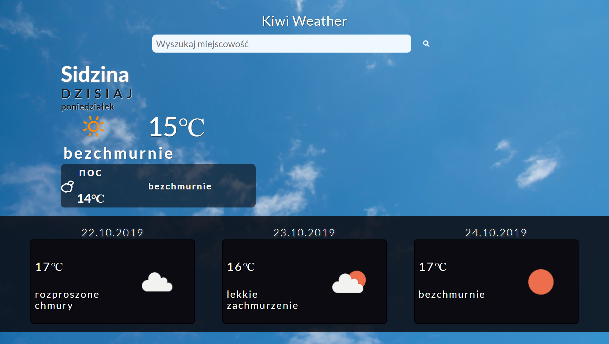
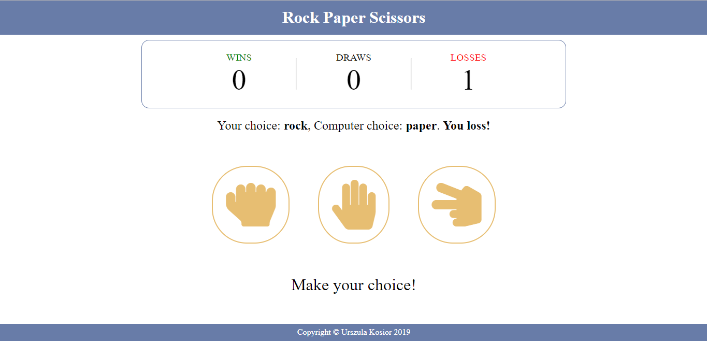
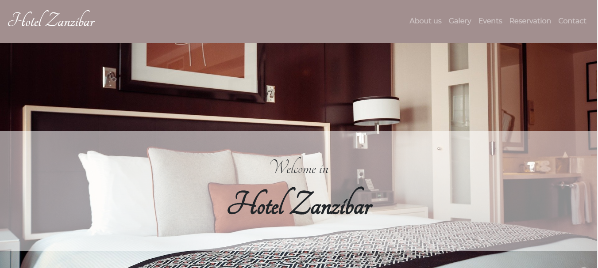

Projekty



Witaj na mojej stronie!
Nazywam się Urszula Buczak. Jestem początkującą Front End Developerką.
Od kilkunastu miesięcy systematycznie poznaję nowe technologie front-endowe a także szlifuję już zdobytą wiedzę poprzez tworzenie stron internetowych. W każdym projekcie staram się wykorzystać nowe umiejętności i sprawić by strona była czytelna i funkcjonalna dla użytkownika.
Jednak zacznijmy od początku 🙂
W 2018 roku ukończyłam studia drugiego stopnia o kierunku Technologia Chemiczna na AGH w Krakowie. Już w szkole średniej pojawiło się u mnie zainteresowanie technologiami informatycznymi. Jednak los pokierował mnie w stronę chemii analitycznej. Studia wypracowały we mnie cierpliwość, umiejętność wyszukiwania informacji a także dociekliwość (przez co, czasami ciężko mi odpuścić aż znajdę optymalne rozwiązanie 🙂), ale stwierdziłam, że jednak nie jest to zajęcie, z którym wiążę swoją przyszłość. Szukając innych alternatyw postanowiłam spróbować swoich sił we front-endzie i udało się! To jest to co chciałabym robić 🙂 Codziennie wolne chwile poświęcam poszerzaniu wiedzy i zdobywaniu nowych umiejętności. Ukończyłam kurs programowania CodersCamp we Wrocławiu, który pomógł mi usystematyzować zdobytą wcześniej wiedzę z HTML, CSS oraz JS a także wprowadził mnie w Node.js oraz React i Redux.
Co poza programowaniem?
W wolnym czasie, jeśli akurat nie tworzę nowych stron, uwielbiam grać w gry planszowe, a także malować po numerach.
HTML
CSS
JavaScript
React
Redux
Node.js